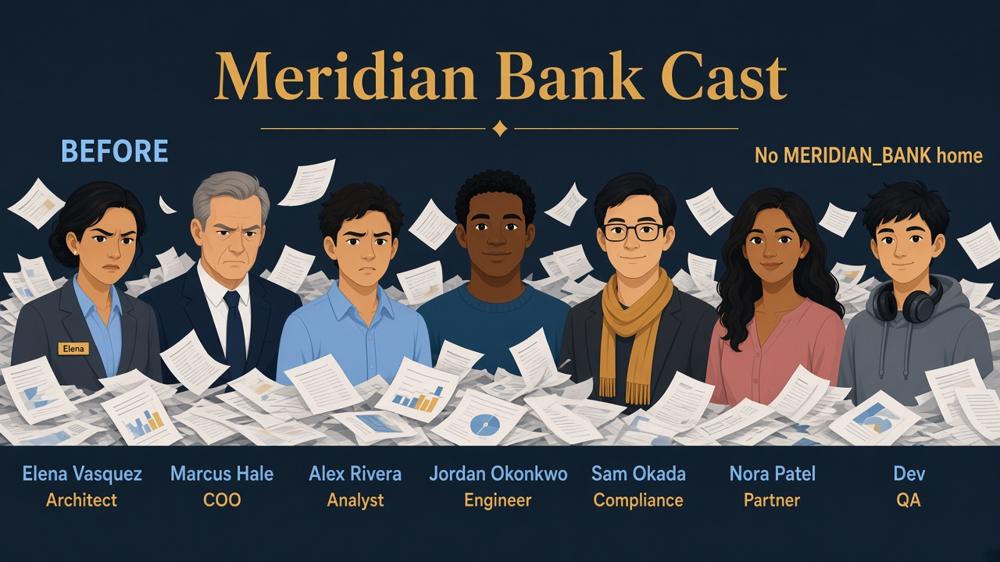
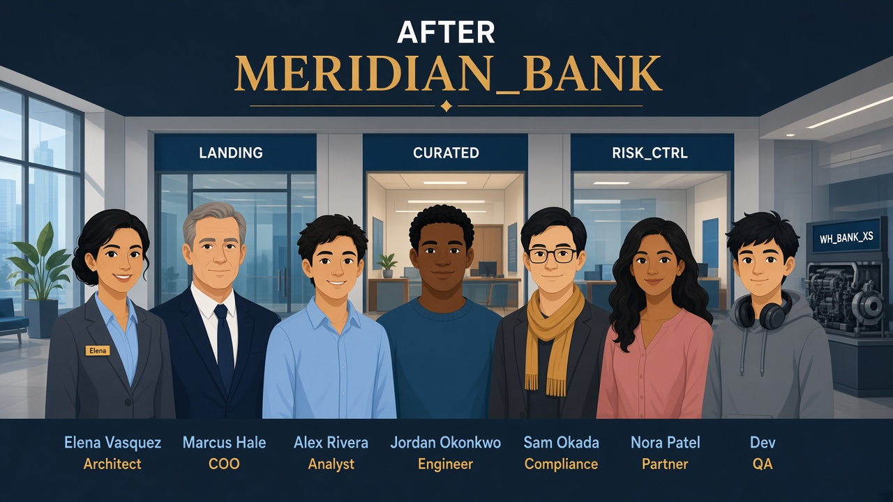

Read every Teach first section before you copy SQL.
This lab is the empty bank building — warehouse, database, folders (schemas), and Elena’s architect badge.
Story optional but Marcus makes more sense if you skim it.
Business problem
Meridian Bank has no dedicated Snowflake home. Files and half-built tables live in random places.
Marcus (COO) says: “Give us one building, a cheap engine, and a clear owner — today.”
Solution you will build
Database MERIDIAN_BANK, warehouse WH_BANK_XS, architect role
ROLE_BANK_LAB_ADMIN, schemas for BRONZE_LANDING through utils, and five sample BRONZE_LANDING.CLIENTS rows with PII for tomorrow’s security lab.

Before
No bank home — files and half-built tables everywhere.

After
One building — MERIDIAN_BANK rooms + WH_BANK_XS engine.
See it — don’t memorize definitions
Look at what you’re about to create in Snowsight — names you’ll reuse all week.
Container
Database = the building
Everything Meridian owns lives inside one named database.
random tables → MERIDIAN_BANK
Folder
Schema = a room
Groups related tables — like floors in the building.
BRONZE_LANDING = loading dock SILVER_CURATED = clean shelves
Engine
Warehouse runs queries
Compute you turn on — credits while it’s running.
USE WAREHOUSE WH_BANK_XS; small · auto-suspend
Badges
Two roles today
Mayor bootstraps; Elena wears architect badge for daily labs.
ACCOUNTADMIN (5 min) → ROLE_BANK_LAB_ADMIN
Picture · The bank building
Elena opens MERIDIAN_BANK; rooms BRONZE_LANDING→UTILS; engine WH_BANK_XS; Marcus watches.
ACCOUNTADMIN vs lab admin — why both?
Snowflake separates who can spin up account-wide powers from who runs the bank day to day.
Only ACCOUNTADMIN can create warehouses, stamp “CREATE ROLE” on Elena’s badge, and transfer database ownership.
After bootstrap, Elena wears ROLE_BANK_LAB_ADMIN for Labs 01–14 — same person, narrower powers (interview-realistic).
1 · MayorACCOUNTADMINcreate WH + DB + stamp lab admin
3 · TomorrowFR_* job badgesAlex, Jordan, Sam — Lab 01
Rooms Elena labels inside MERIDIAN_BANK
Dock
BRONZE_LANDING
Raw client/txn files land here — not “RAW”.
BRONZE_LANDING.CLIENTS
Shelves
SILVER_CURATED
Cleaned data — broader read than the dock.
views · facts · Lab 01 window
Later labs
RISK_CTRL · GOLD_MART · FILE_IN
Policies, gold reports, file truck bay.
masking · board metrics · COPY
Snowflake also shows PUBLIC and INFORMATION_SCHEMA — automatic; ignore for this course.
1
Open Snowsight as ACCOUNTADMIN
What this step is
You are not “being Elena” yet. You are the mayor long enough to pour the foundation.
In Snowsight, open Admin → Users & Roles or the worksheet role dropdown and pick ACCOUNTADMIN.
Why Elena does not stay here
Interview answer: least privilege — architects own the bank DB, they don’t need permanent god-mode on the account.
Role: ACCOUNTADMIN ▾
✓ Worksheet context shows ACCOUNTADMIN before Step 2
2
Create the cheap engine (warehouse)
What this does
WH_BANK_XS is XSMALL compute. AUTO_SUSPEND = 60 turns it off after a minute idle;
INITIALLY_SUSPENDED = TRUE means you don’t burn credits until the first query wakes it.
SQL · warehouse
USE ROLE ACCOUNTADMIN;
CREATE WAREHOUSE IF NOT EXISTS WH_BANK_XS
WAREHOUSE_SIZE = 'XSMALL'
AUTO_SUSPEND = 60
AUTO_RESUME = TRUE
INITIALLY_SUSPENDED = TRUE
COMMENT = 'Meridian Bank lab warehouse — interview prep';
✓ Admin → Warehouses lists WH_BANK_XS (may show Suspended)
3
Print Elena’s architect badge
What this does
Creates an empty custom role. It has no powers until the next grants — like a blank ID before HR activates it.
SQL · lab admin role
CREATE ROLE IF NOT EXISTS ROLE_BANK_LAB_ADMIN
COMMENT = 'Lab architect role — owns Meridian Bank lab objects';
✓ Role appears under Account → Roles
4
Account-level powers Elena will need later
Read each grant like English
CREATE ROLE — print FR_/AR_ badges (Lab 01)
APPLY MASKING / ROW ACCESS POLICY — hang rules on tables (Lab 03)
EXECUTE TASK — run scheduled stream workers (Lab 05)
CREATE SHARE — outbound data shares (later labs)
SQL · account grants (1/2)
GRANT CREATE ROLE ON ACCOUNT TO ROLE ROLE_BANK_LAB_ADMIN;
GRANT APPLY MASKING POLICY ON ACCOUNT TO ROLE ROLE_BANK_LAB_ADMIN;
GRANT APPLY ROW ACCESS POLICY ON ACCOUNT TO ROLE ROLE_BANK_LAB_ADMIN;
SQL · account grants (2/2)
GRANT EXECUTE TASK ON ACCOUNT TO ROLE ROLE_BANK_LAB_ADMIN;
GRANT CREATE SHARE ON ACCOUNT TO ROLE ROLE_BANK_LAB_ADMIN;
✓ No errors — Elena can run later labs without ACCOUNTADMIN
5
Let the lab admin turn the engine on
USAGE vs OPERATE
USAGE = run queries on the warehouse. OPERATE = resume/suspend it. WITH GRANT OPTION lets Elena pass warehouse access to FR_ roles in Lab 01.
SQL · warehouse grants
GRANT USAGE ON WAREHOUSE WH_BANK_XS TO ROLE ROLE_BANK_LAB_ADMIN WITH GRANT OPTION;
GRANT OPERATE ON WAREHOUSE WH_BANK_XS TO ROLE ROLE_BANK_LAB_ADMIN WITH GRANT OPTION;
✓ Lab admin can USE WAREHOUSE WH_BANK_XS after you switch roles
6
Create the bank building (database)
What this does
Creates MERIDIAN_BANK and transfers ownership to Elena’s role so she controls schemas and tables inside it.
SQL · database + ownership
CREATE DATABASE IF NOT EXISTS MERIDIAN_BANK
COMMENT = 'Meridian Bank — Snowflake Architect interview prep';
GRANT OWNERSHIP ON DATABASE MERIDIAN_BANK TO ROLE ROLE_BANK_LAB_ADMIN COPY CURRENT GRANTS;
✓ Data → Databases shows MERIDIAN_BANK owned by ROLE_BANK_LAB_ADMIN
7
Give your user the architect badge
Why SET uname?
Snowflake needs your login name to attach the role. CURRENT_USER() avoids typing it wrong.
SQL · grant role to you
SET uname = (SELECT CURRENT_USER());
GRANT ROLE ROLE_BANK_LAB_ADMIN TO USER IDENTIFIER($uname);
✓ Your user can switch to ROLE_BANK_LAB_ADMIN in the dropdown
8
Smoke test: CREATE ROLE works
Why before Lab 01?
If this create+drop fails, Lab 01’s FR_/AR_ roles will fail — fix grants now, not mid-RBAC drama.
SQL · switch + smoke
USE ROLE ROLE_BANK_LAB_ADMIN;
CREATE ROLE IF NOT EXISTS ROLE_BANK_SMOKE_TMP COMMENT = 'temp smoke test';
DROP ROLE IF EXISTS ROLE_BANK_SMOKE_TMP;
✓ Both statements succeed — CREATE ROLE grant is real
9
Label the rooms (schemas)
What this does
Empty folders inside MERIDIAN_BANK. Tables you create later land in one schema at a time via USE SCHEMA or fully qualified names like BRONZE_LANDING.CLIENTS.
SQL · session context
USE WAREHOUSE WH_BANK_XS;
USE DATABASE MERIDIAN_BANK;
SQL · create schemas
CREATE SCHEMA IF NOT EXISTS BRONZE_LANDING;
CREATE SCHEMA IF NOT EXISTS SILVER_CURATED;
CREATE SCHEMA IF NOT EXISTS RISK_CTRL;
CREATE SCHEMA IF NOT EXISTS GOLD_MART;
CREATE SCHEMA IF NOT EXISTS FILE_IN;
CREATE SCHEMA IF NOT EXISTS UTILS;
SQL · verify bootstrap
SELECT 'Lab 00 Meridian Bank bootstrap OK' AS status;
SHOW SCHEMAS IN DATABASE MERIDIAN_BANK;
✓ Status row + BRONZE_LANDING, SILVER_CURATED, RISK_CTRL, GOLD_MART, FILE_IN, UTILS in the list
10
Load five sample clients into the vault
Why clients with SSN last-4?
Lab 01’s whole drama needs realistic PII in BRONZE_LANDING.CLIENTS so Elena can prove Alex cannot SELECT it.
Matches sql/00_sample_data.sql.
SQL · context + table DDL
USE ROLE ROLE_BANK_LAB_ADMIN;
USE WAREHOUSE WH_BANK_XS;
USE DATABASE MERIDIAN_BANK;
USE SCHEMA BRONZE_LANDING;
CREATE OR REPLACE TABLE CLIENTS (
CLIENT_ID NUMBER,
FULL_NAME STRING,
EMAIL STRING,
PHONE STRING,
COUNTRY STRING,
SSN_LAST4 STRING,
CREATED_AT TIMESTAMP_NTZ DEFAULT CURRENT_TIMESTAMP()
);
✓ 5 rows — emails and SSN_LAST4 visible while you’re still lab admin
Interviewer presses further — say these out loud
Basics got you into the room. Cover each answer before you open it.
If you blank here, an Architect + dbt interviewer will know.
Q1. Why give ROLE_BANK_LAB_ADMIN ownership of MERIDIAN_BANK instead of leaving everything under ACCOUNTADMIN?
Say: ACCOUNTADMIN is break-glass, not a daily builder. Ownership lets Elena create schemas and grant privileges without wearing the god role for every change. Prod: account grants once; day-to-day DDL under an owned platform/architect role.
Q2. Why WITH GRANT OPTION on warehouse USAGE/OPERATE to lab admin — what breaks without it?
Say: Lab 01 needs Elena to pass WH_BANK_XS to FR_ roles. Without GRANT OPTION she can use the warehouse but cannot grant it onward — RBAC proofs die on “insufficient privilege to grant.” Grant option is how you delegate without making everyone ACCOUNTADMIN.
Q3. When would you not put Bronze, Silver, Gold, Risk, and Utils all in one database?
Say: One database fits Meridian’s single domain and shared RBAC. Split when regulatory isolation, separate billing, or different replication scopes force separate buildings — not because medallion “needs” three databases. Schemas are rooms; databases are buildings.
Q4. Auto-suspend saves money — what’s the failure mode students miss?
Say: Too-aggressive suspend + chatty short queries = resume latency and cold-cache pain; no suspend = idle credit burn. Tune suspend separately from size. Never leave a warehouse with no suspend “because trial feels free.”
Q5. Bootstrap as ACCOUNTADMIN then switch — how do privilege repair and trial vs prod differ?
Say: Trial often has one user as ACCOUNTADMIN; prod scripts account grants once (00_privilege_repair) and refuses daily build as ACCOUNTADMIN. If APPLY POLICY / EXECUTE TASK / CREATE SHARE fail later, that’s missing account grants — not a medallion bug.
Elena’s wrap-up (say this out loud)
“Meridian had no Snowflake home. As ACCOUNTADMIN I poured the foundation: warehouse WH_BANK_XS with auto-suspend,
database MERIDIAN_BANK owned by ROLE_BANK_LAB_ADMIN, and labeled schemas — BRONZE_LANDING for raw, SILVER_CURATED for clean,
RISK_CTRL for policies, GOLD_MART for reports. I loaded five sample clients with PII so we can prove security tomorrow.
Outcome: one owned playground, near-zero idle cost, ready for RBAC.”
Tomorrow’s Lab 01 proof
When Alex’s vault query “should fail” but returns rows, you forgot
USE SECONDARY ROLES NONE — see Gotchas.